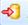

Submitting Content to the Git Repository
Context
Procedure
- Share new projects after deploy If you create a new project, you have to share the project to the Git Repository.
- In the Project Explorer, right-click on the project and choose
 Team
Team  Share Project…
Share Project…  from the context menu.
from the context menu.
- In the Project Explorer, right-click on the project and choose
- Push content to the Git Repository
- Under Remotes origin , right-click on the URL of the remote repository
indicated with (Push icon).
 , and follow the available troubleshooting
information.
, and follow the available troubleshooting
information. - Under